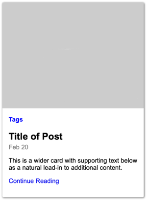
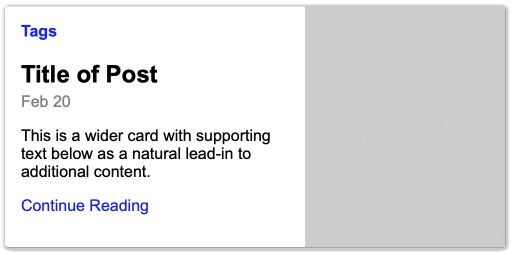

Websites are often just collections of pieces called components.
Treating them this way helps us to write more re-usable code. It
also can help reduce the complexity of redesigns. This activity will
go through the process of designing and creating a reusable web
component.
Activity
Review BEM.
One issue we run into very early on with components is that CSS
has global scope. What this means is that all CSS is visible
EVERYWHERE! For something like a component that is designed to be
reusable this can cause problems. You might include the component
into the HTML and CSS and find out that you had the same class
names in the component that you had in the existing CSS and
something breaks.
CSS naming conventions are designed to help with the global nature
of CSS. One popular convention is called BEM - Block, Element,
Modifier. If you did not complete the Architecture and
Organization Module take a few minutes to familiarize yourself
with
BEM's basic conventions.
Review the layout.
Below is a screenshot of the component we would like to build. It
is a simple article summary that you might find on a typical blog.
Review it considering how the HTML should be structured, and how
you might layout and name the different blocks and elements.

Small/Mobile

Large
Identify blocks and elements
Our component is made up of the following elements:
An image
A list of tags
Title
Date
A short lead in to the article.
A link to continue to the article.
As we write our HTML we should keep semantics in mind as we choose
our HTML tags, as well as the tenets of BEM as we determine
classes
Write the HTML
Create a new file in your editor, or Codepen and attempt to write
the HTML complete with appropriate classes. Then return and check
out the instructor's solution below.
<article class="summary">
<img
class="summary__img"
src="http://via.placeholder.com/320x240"
alt="post image"
/>
<div class="summary__body">
<p class="summary__tags">Tags</p>
<h2 class="summary__title">Title of Post</h2>
<p class="summary__date">Feb 20</p>
<p class="summary__para">
This is a wider card with supporting text below as a natural lead-in
to additional content.
</p>
<p class="summary__link"><a href="#">Continue Reading</a></p>
</div>
</article>
Notice a few things about the code above.
First, this is not the only way to code this up. You may have
differences in your code, and that is ok. You may have decided
that a section would be a better wrapper than an
article for example, and you may be right ;)
Second notice that almost everything has a class on it. We start
with our block class summary at the top, and then we
name the elements. You might be saying to yourself "why don't I
just use complex selectors and get rid of half of those
classes?" If we are using a naming convention like BEM (and for
this activity we should be), it specifies that we should not use
element selectors in our CSS. The only way to avoid that is to
use lots of classes. This is one of the biggest complaints most
folks have with BEM...but it turns out that as projects become
larger and more complex consistently adopting a naming
convention like this makes the code much much easier to maintain
over time.
One word in favor of having classes on everything. It makes it
really easy to differentiate between all of those paragraph
elements, and it makes it clear in the HTML what content is
contained in each element. They also provide nice hooks if we
were using this as a template for a bunch of articles coming
from a database. Getting the right information into each element
becomes easy...and things won't break if a someone decides to
re-order and re-style things without talking to anyone!
This markup will also lend itself well to both our small and
large screen views. For the small screen view in fact we will
need very little positioning.
Style
Add the CSS (SCSS if you have completed that module) to style the
mobile view first. Then add whatever media queries you need to
make the design responsive. Pay attention to padding, margins,
font-sizes, placement, etc. You can just use
helvetica, arial, san-serif for the font.
If you are using SCSS you have a great tool to help you manage
your BEM naming: nesting. Here is an example of how that might
work:
At this point we would be prepared to use our component in a
single or multiple layouts. We would simply copy/paste the
template and fill in with real content. The arrangment of the
components is up to the layout they are placed in. The component
is only concerned with what happens inside of it...not out. It
might look something like this:
Submit in Ilearn
Submit the codepen url to Ilearn.
Completion
Screenshot replicated closely in HTML and CSS/SCSS.